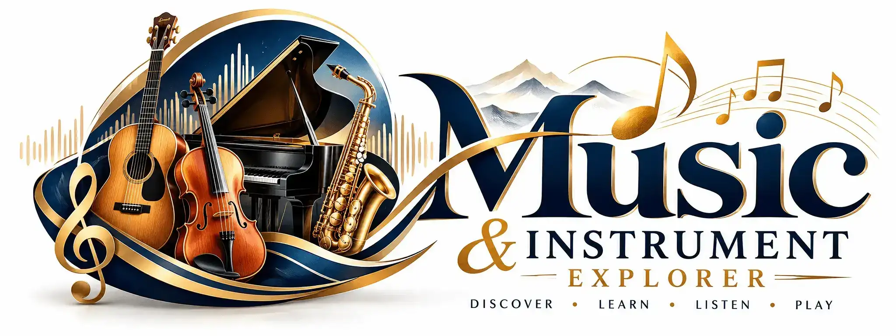

Find Your Sound
Discover musical instruments from around the world. Explore their sounds, learn about their unique features, and find the instrument that inspires you.
Explore InstrumentsDiscover instrument families
From the expressive strings to the rhythm of percussion, each instrument family has a unique voice. Browse our collection to find the one that inspires you.
Make your own learning list
Save instruments as favorites, then visit Favorites & Learn to share which one you want to try.
My favorites